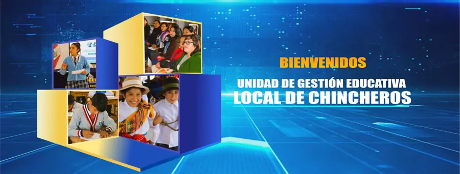
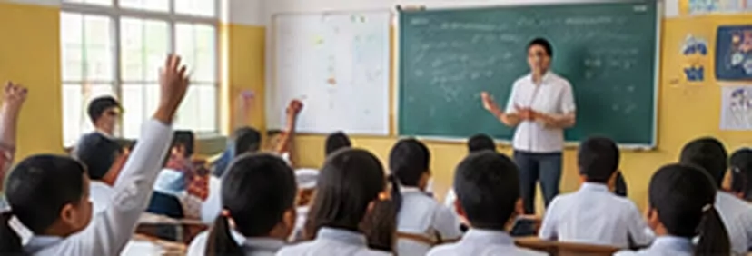
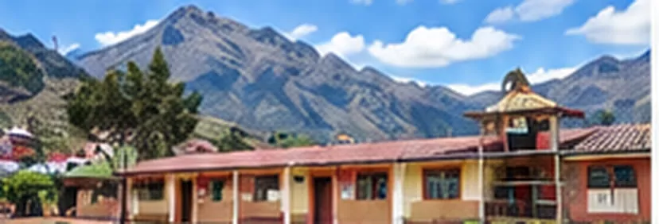
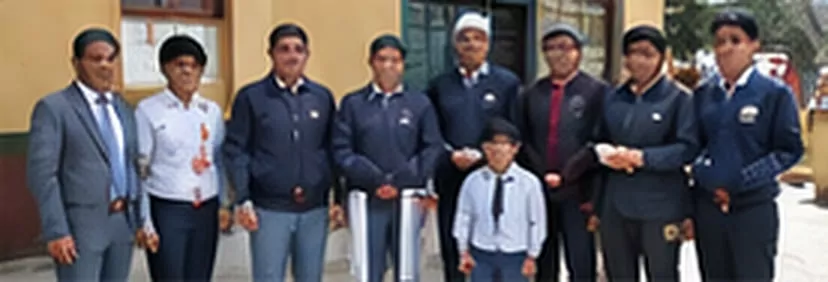

Oficios
Ver todosRedes sociales
Ver página
Nueva página de la Unidad de Gestión Educativa Local de Chincheros
Sitio web de educación
SeguirUbicación
Abrir en MapsUnidad de Gestión Educativa Local Chincheros - UGELCHPasaje Mirador S/N
Chincheros - Apurímac, Perú
Horario de atenciónLunes a viernes
8:30 a. m. a 4:30 p. m.
Noticias y actividades
Ver todas
Inicio del Año Escolar 2025 en la UGEL ChincherosInstituciones educativas se preparan para un retorno seguro y con más oportunidades para nuestros estudiantes.
UGEL Chincheros fortalece la gestión educativa en las II.EE.Reuniones de trabajo con directivos para mejorar los servicios educativos en la provincia de Chincheros.
Capacitación docente para el Buen Inicio del Año EscolarEspacios de formación y acompañamiento pedagógico para una educación de calidad.